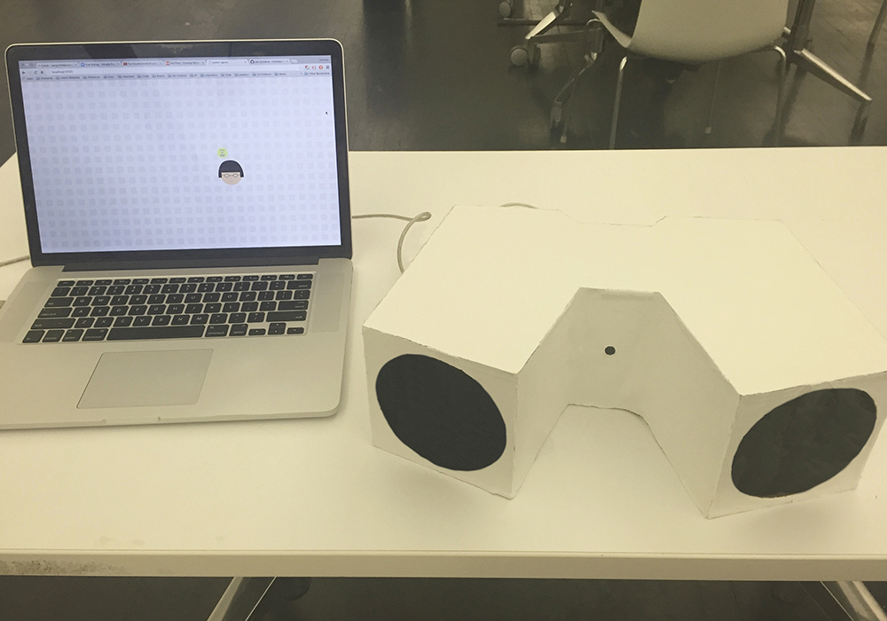
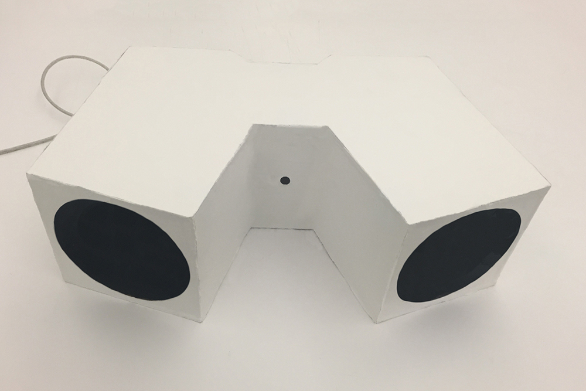
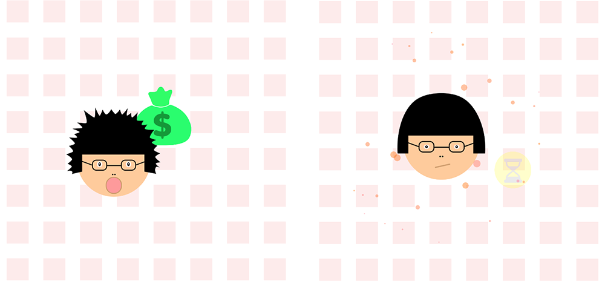
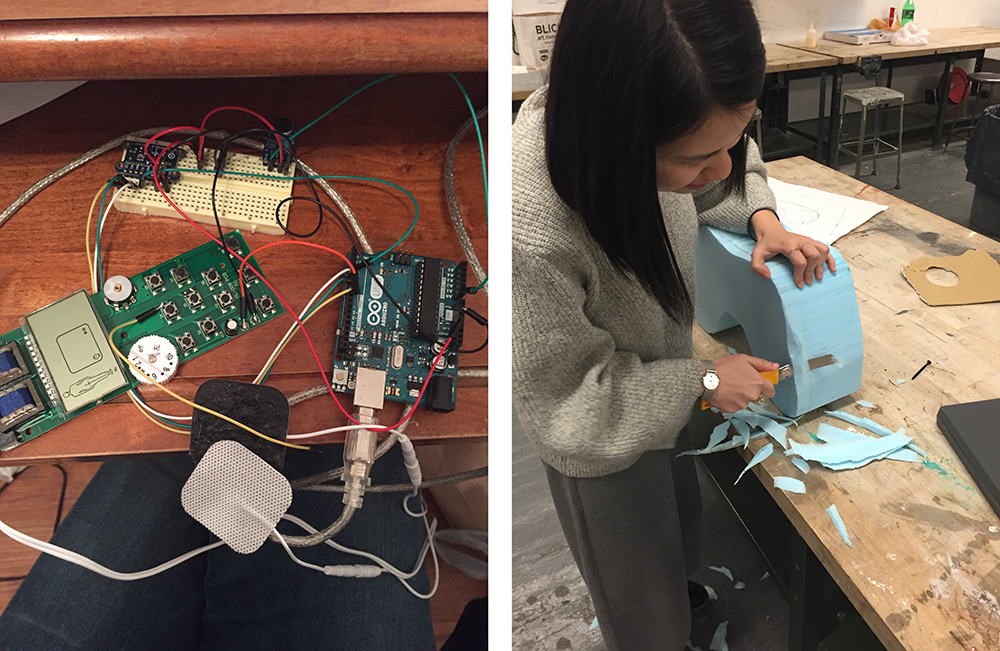

The Punishment Game
2015
  Strategies? Rewards? No, punishment is the ultimate key to keep games interesting. To cancel out the punishment and get back to playing again, there are a few options – paying for more lives, watching ads, sharing on social media, or just simply being patient to wait. And this is where the games make more money and have you promote for them. However, after all the digital punishment is only one of the strategies to keep players engaged in the game. Does it impact on the players’ behaviors in real life?
The Punishment Game is an antigame that takes concerns about implications of punishment in video games to real life. It consists of a web game and a customized physical controller.
The player puts his/her hands inside of the controller and control the movement of the avatar in the game with a gyroscope, and shouts to the controller to fire at the enemies. When the avatar is attacked by the enemies in the game, the player also gets physical electric shock on the hands.
Watch a short video of my friend Kim playing the game.
Building process: My friend Matias from Product Design assisted me making the blue foam model of the enclore. The final product is covered with neoprene fabrics to give it a nice grip. Inside of the controller, there is an Arduino board controller a microphone and a gyroscope. I also hacked an electric pulse massager to be controlled with Arduino.
